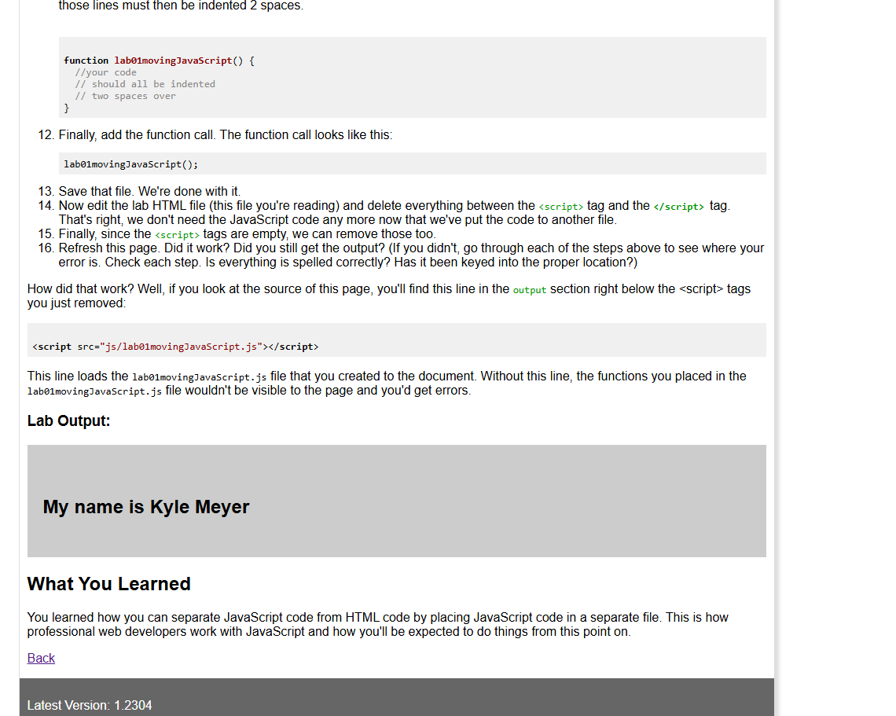
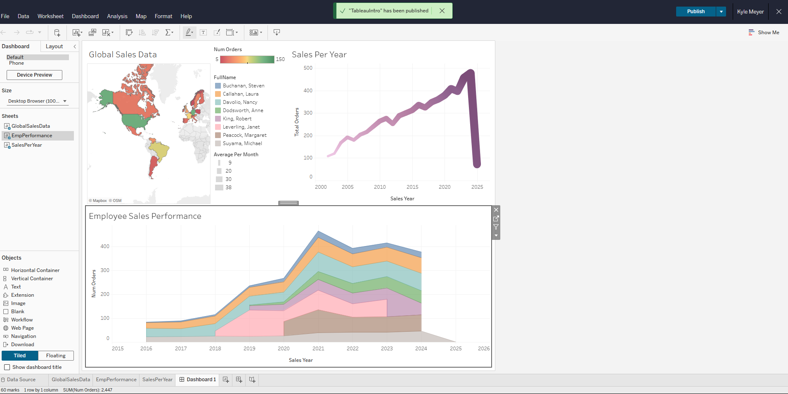
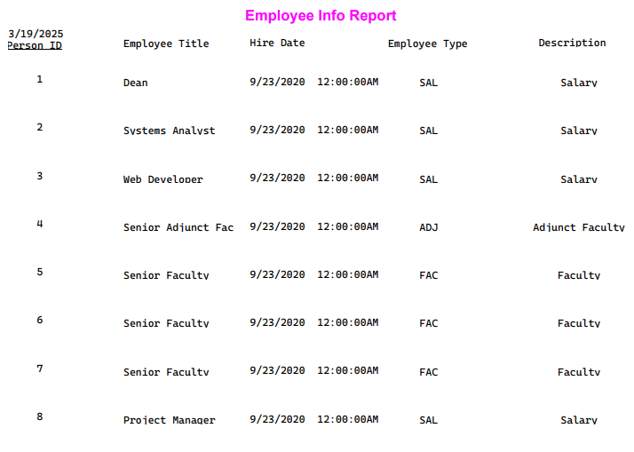
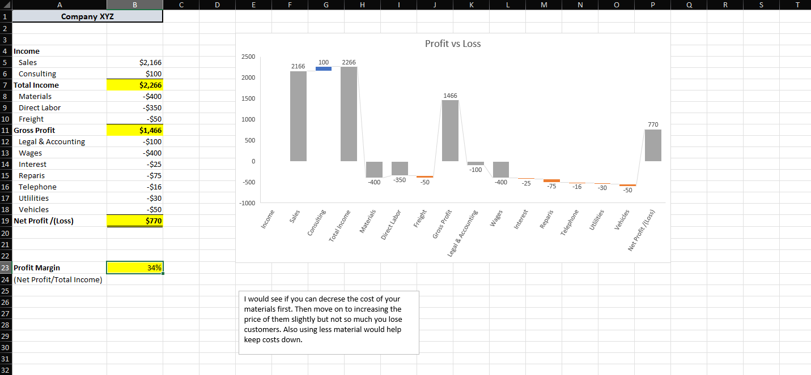

Programming Fundamentals
This course built on the basics of programming and focused on writing code to solve problems. We worked with JavaScript and learned how to plan, test, and troubleshoot programs.
Topics and skills covered
- Planning programs with pseudocode and flowcharts.
- Variables, operators, and making decisions with
ifandelse. - Loops, arrays, and functions to organize reusable code.
- Testing and debugging programs using development tools.

Database 2
Database 2 went further into designing and managing relational databases. We covered more advanced SQL, building database tables, and checking whether a database is structured and working correctly.
Topics and skills covered
- Creating and populating tables in a relational database.
- Writing SQL queries with joins, nested queries, and scripts.
- Designing entity-relationship diagrams and normalizing data.
- Testing databases and exploring ways to improve performance.

BI Data 1 – Paginated
This class introduced database reporting and how to turn SQL data into organized reports. We used tools such as SQL Server, Microsoft Access, and Power BI Report Builder to work with data and create paginated reports.
Topics and skills covered
- Using SQL Server and SQL Server Management Studio to work with data.
- Connecting to data sources, including ODBC connections.
- Creating datasets and using SQL queries for reports.
- Building reports with tables, groups, parameters, charts, and page headers.

Business Analytics
Business Analytics focused on using data to understand problems and support decisions. We looked at different types of analysis and used spreadsheets, charts, and dashboards to find patterns and explain results.
Topics and skills covered
- Descriptive, predictive, and prescriptive analytics.
- Using spreadsheet functions, data validation, and what-if analysis.
- Creating PivotTables, charts, and dashboards to summarize information.
- Checking data accuracy and using findings to make recommendations.

What Comes Next?
Next I'll add an example of SQL or database design from Database 2. I'll keep expanding the portfolio as I work through the remaining blocks.
Course summaries are based on the CVTC IT – Data & Analytics Specialist competencies document.